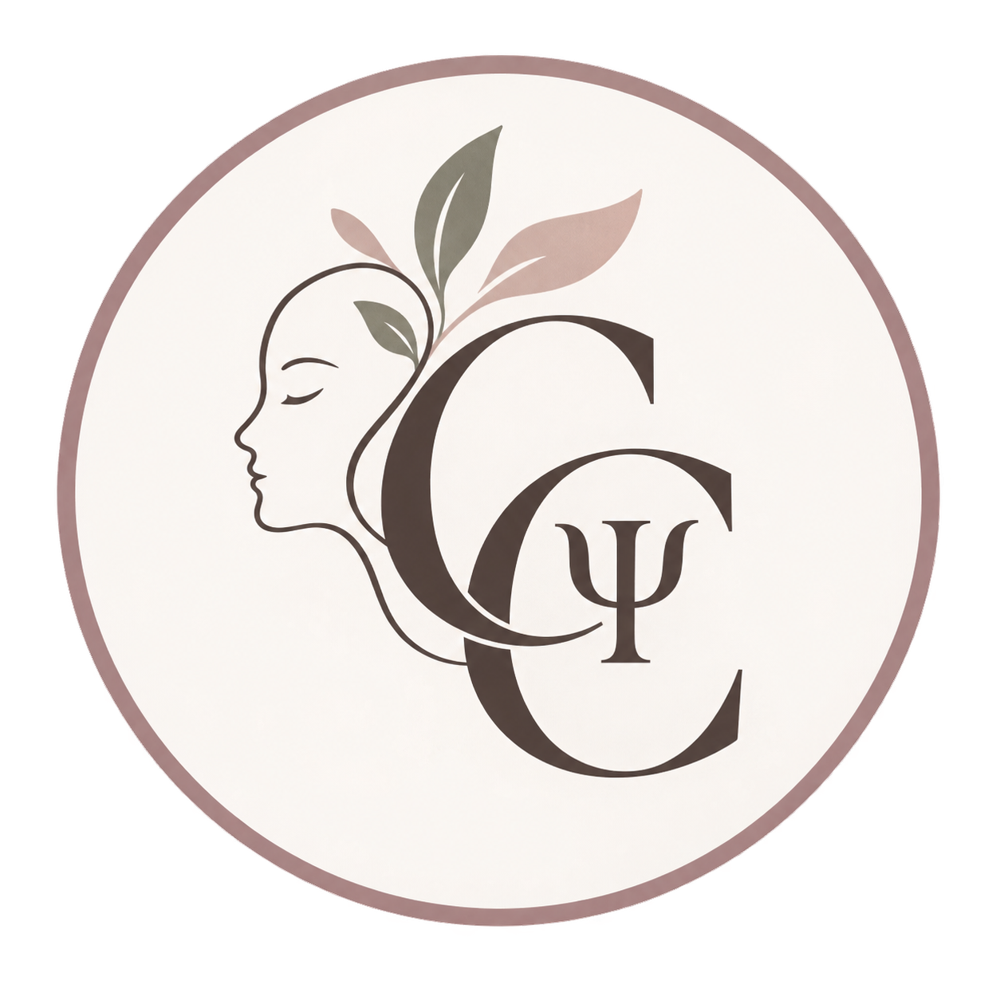
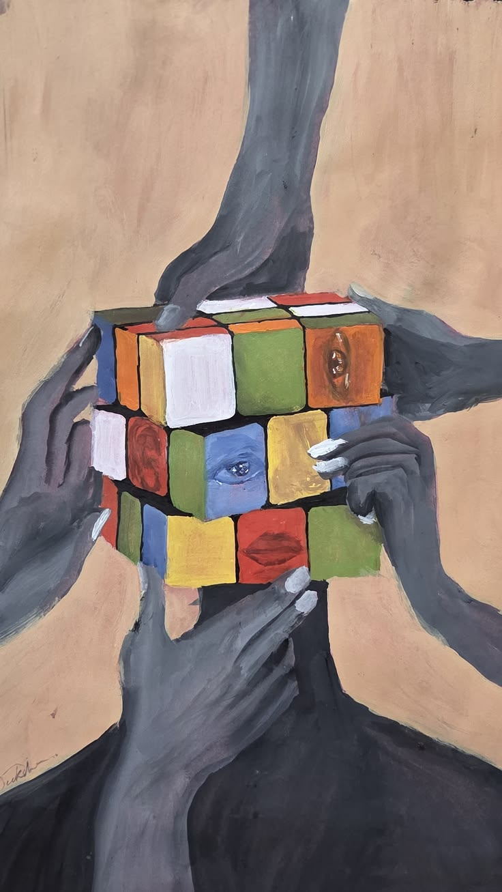
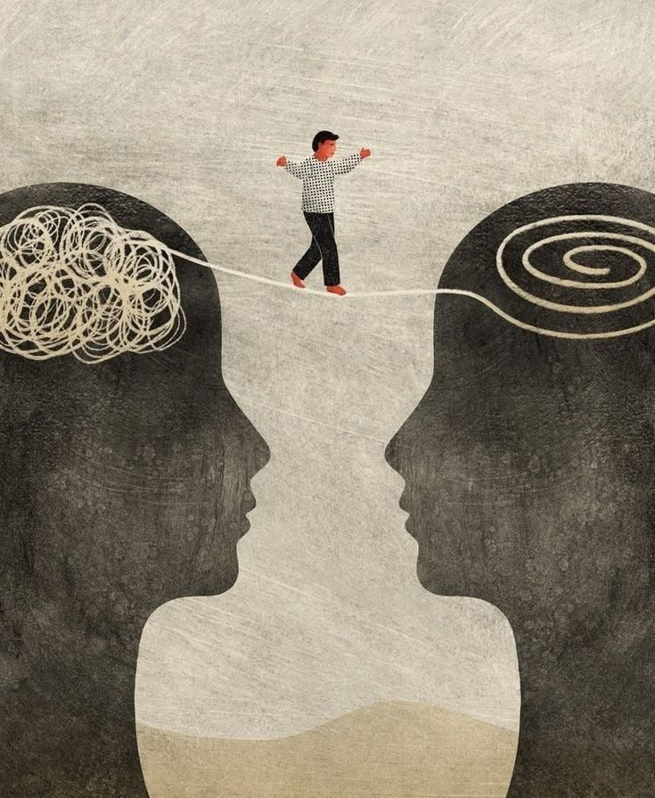
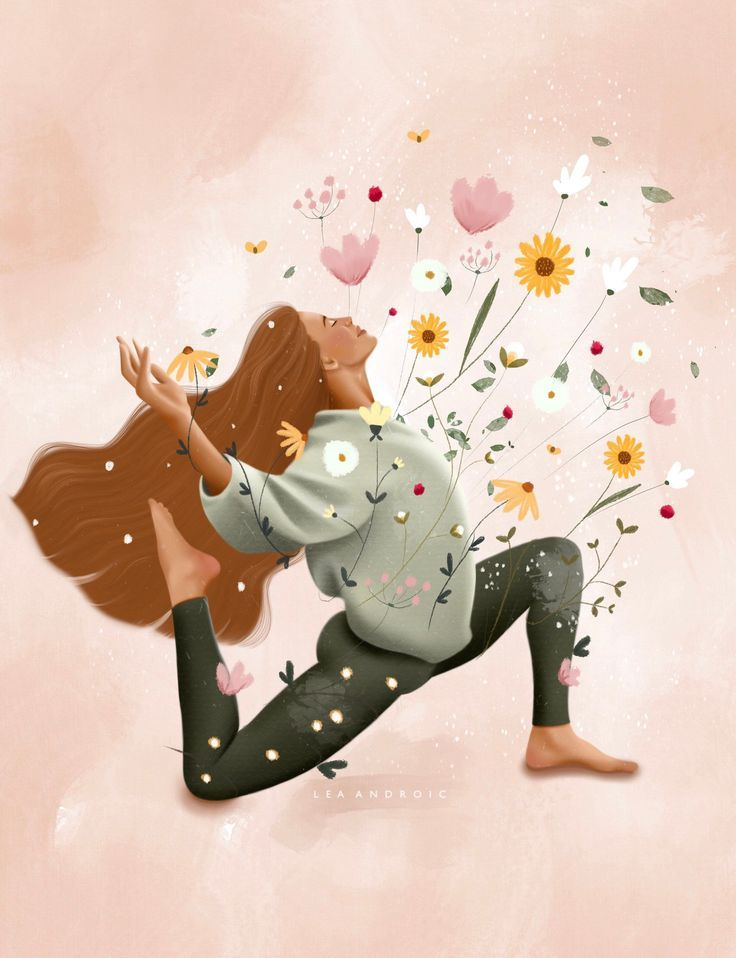
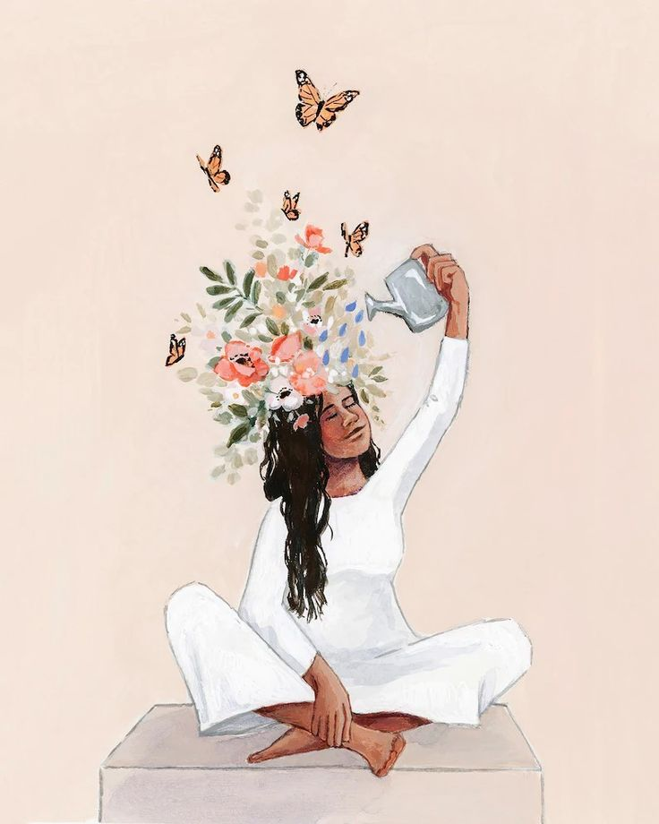
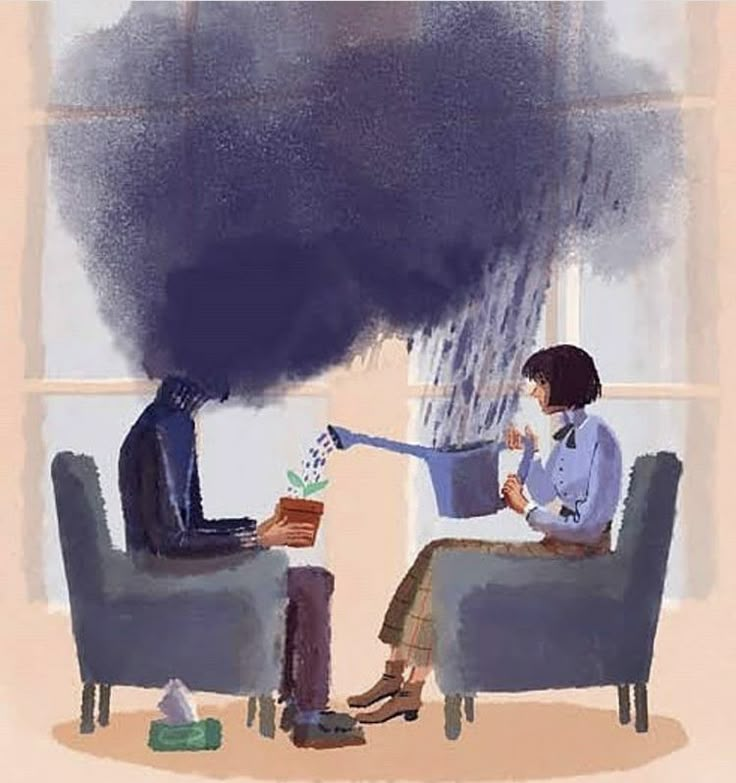

Kaygı ve Stres
Zihinsel yoğunluk, bedensel gerginlik ve sürekli tetikte olma haliyle çalışma.

Psikolog Gaye Coşkun Psikolojik DanışmanlıkKumluca psikolog ve online psikolojik danışmanlık
Kumluca psikoloji desteği arayanlar için kendinizi daha iyi anlamaya, zorlayıcı duygu ve düşüncelerle temas kurmaya ve yaşamınızda daha sağlam adımlar atmaya alan açan sakin, yargısız ve güvenli bir görüşme süreci.
Hakkımda
Kumluca psikolog desteği kapsamında psikolojik danışmanlık süreci; kişinin düşünce, duygu, ilişki ve yaşam deneyimlerini anlamlandırmasına eşlik eden ortak bir çalışmadır. Bu sitede sunulan yaklaşım, danışanın kendini daha net duyabilmesine ve yaşamındaki tekrar eden döngüleri fark edebilmesine odaklanır.
Görüşmelerde temel hedef, hazır cevaplar vermek değil; sizin hikayenizi birlikte dinlemek, ihtiyacınızı anlamak ve size iyi gelecek değişim alanını adım adım kurmaktır.
Antalya Kumluca doğumlu olan Psikolog Gaye Coşkun, Muğla Sıtkı Koçman Üniversitesi mezunudur. Kumluca'da yüz yüze görüşme ve ihtiyaç durumuna göre online psikolojik danışmanlık desteği sağlamaktadır.


Psikoloji Alanları
Zihinsel yoğunluk, bedensel gerginlik ve sürekli tetikte olma haliyle çalışma.
Dalgalanan duyguları tanımak, ifade etmek ve onlarla daha sağlıklı temas kurmak.
Sınır koyma, iletişim, bağlanma ve tekrar eden ilişki döngülerini anlamlandırma.
Kendilik algısı, ihtiyaçlar, değerler ve yaşam yönü üzerine derinleşme.
İsteksizlik, içe çekilme, umutsuzluk ve yaşam enerjisinde azalma üzerine destek.
Zorlayıcı yaşam olaylarının etkilerini anlamlandırma ve güven duygusunu yeniden kurma.
Beklenti baskısı, erteleme, odaklanma güçlüğü ve kaygı yönetimi üzerine çalışma.
Kumluca dışında yaşayan danışanlar için çevrim içi görüşme seçeneği.

Terapi Alanı
Bazen iyileşme, cevapları hemen bulmak değil; kendinizi ilk kez dikkatle dinleyebildiğiniz bir yerde durabilmektir.
Süreç
İhtiyacınız, beklentiniz ve görüşme biçimi netleştirilir.
Yaşamınızdaki zorlayıcı alanlar ve güçlü yanlar birlikte ele alınır.
Belirlenen hedefler doğrultusunda haftalık ya da ihtiyaca uygun görüşmeler planlanır.


İletişim
Kumluca psikolog randevusu, online görüşme ya da süreç hakkında kısa bilgi almak için formu doldurun veya WhatsApp üzerinden iletişime geçin. Görüşmeler online ve Kumluca'da yüz yüze olarak planlanabilir. En kısa sürede geri dönüş yapılır.